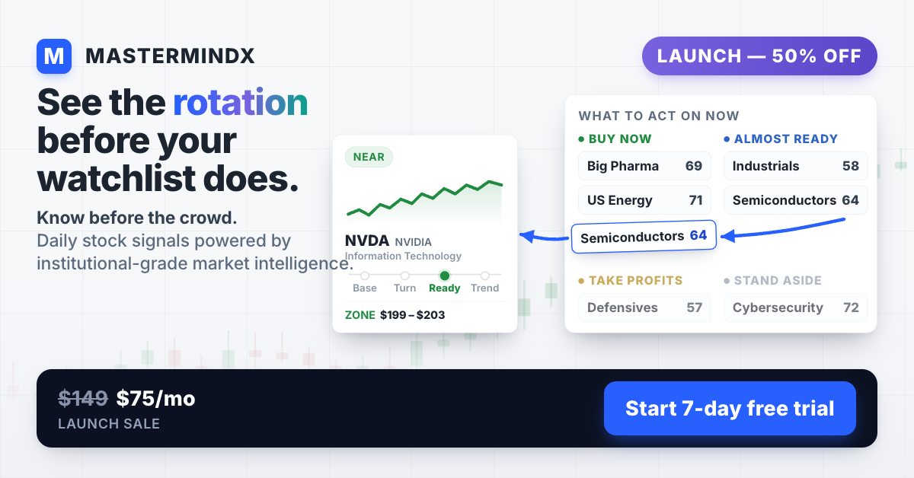
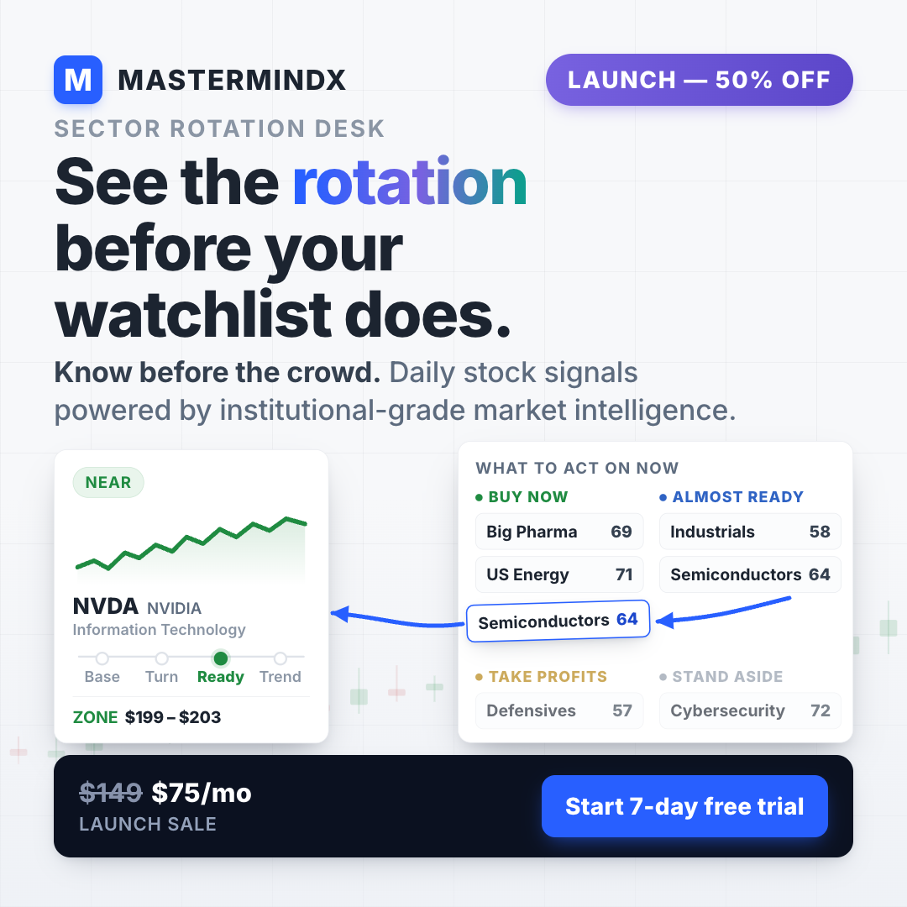

Operator commission 2026-08-02: exactly two ads, Prophet + macro + sector rotation,
institutional-grade positioning, 50% launch offer upfront, retail-plain copy.
Strategy + locked copy: research/AD_ROUND3_FLAGSHIP_BRIEF.md ·
gates: research/AD_MASTER_PAPER.md §0 · per-ad specs: SPECS.md.
Review at 100% for detail, then zoom to ~25% — that is feed scale. Approve / reject
per creative via ad_review.record(...).

